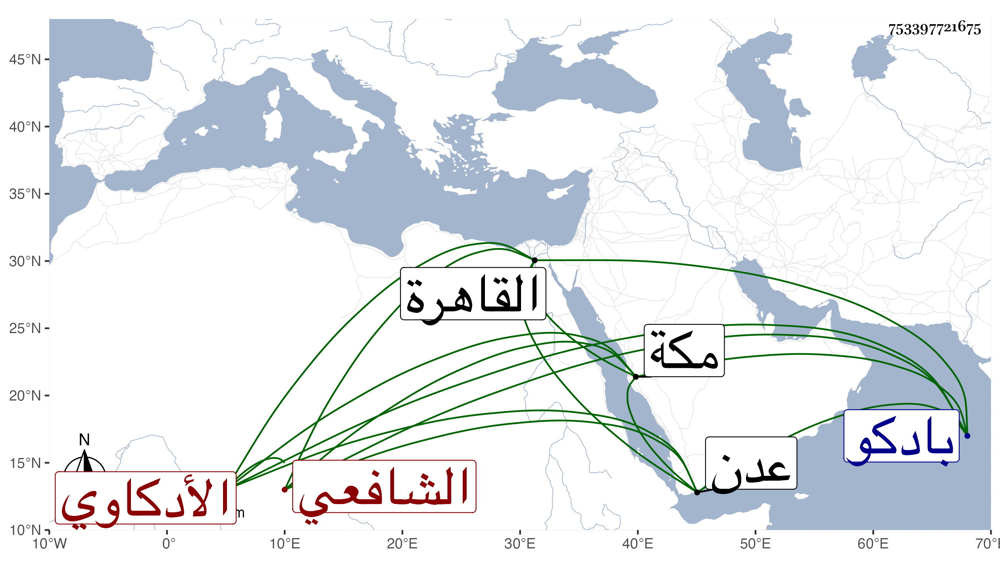

0902Sakhawi.DawLamic.ITO20230111-ara1.EIS1600.753397721675
Biography ID: 753397721675
639
محمد بن سلامة بن محمد بن أحمد بن إبراهيم بن أبي محمد بن علي بن صدقة الشمس الأدكاوي الشافعي الماضي أبوه ويعرف بابن سلامة . ولد سنة ثمان وثلاثين وثمانمائة تقريبا بادكو ونشأ بها فقرأ القرآن وبعض الرسالة لابن أبي زيد على مذهب والده ثم تحول شافعيا وحفظ المنهاج وعرضه في جمادى الآخرة ورجب سنة إحدى وستين على العلم البلقيني وقريبه أبي السعادات والجلالين المحلى وابن الملقن والمناوي والسراجين العبادي والوروري والكمال إمام الكاملية والفخر عثمان المقسي وابن الديري وابن قرقماس وآخرين وتفقه ببلديه رمضان أحد أصحاب الشيخ إبراهيم الأدكاوي وأخذ عنه أيضا في الفرائض والأصلين والعربية وبه انتفع وتهذب بهديه وطريقته في السلوك ونحوه ثم ارتحل لفوة فأخذ عن البدر بن الخلال كتبا كالمنهاج والتنبيه وتصحيحه للنووي وتهذيب التنبيه ومطلب الطالب النبيه للبكري بحثا لكلها ولازمه أربع سنين في شرح الدميري والجمل للزجاجي وغير ذلك في الفقه وأصوله والنحو وحضر تقسيم التنبيه على السراج العبادي وقرأ في المنهاج على الزين زكريا وسمع من شرحه للبهجة دروسا وكذا أخذ النحو عن والده وعن الفقيه شمس الدين بن الترس قرأ عليه الجرومية والملحة وألفية ابن ملك وعنه أيضا أخذ الرحبية وغيرها في الفرائض بل أخذ الفرائض والحساب حتى استوفى النزهة لابن الهائم مع الحاوي الفرعي وشرحه عن إسماعيل اليمني الزبيدي وفي علم الكلام أيضا عن غير من ذكر وفي المنطق عن بعض الطلبة والتصوف عن أبي الفتح الفوي وقرأ عليه رسالته بالقاهرة مرتين وعلى الشهاب المتيجي الشفا والترغيب للمنذري وأكثر الصحيح وعلى إمام الكاملية بعض بداية الهداية للغزالي ولبس منه الخرقة وعلى بعض الفضلاء في شرح جمع الجوامع للمحلى وعلى القول البديع وترجمة النووي وأماكن من كتب وجميع شرحه لأبي شجاع المسمى النهاية في شرح كتاب الغاية وغير ذلك وحضر عندي في الإملاء وتردد لكل من عبد الرحيم الأبناسي وابن قاسم وغيرهما ومهر وتميز وأذن له ابن الخلال في سنة أربع وستين في تدريس الفقه والعربية وكذا أذن له غيره وكتبت له إجازة هائلة ، وانتفع به أهل بلده بل وبعض الواردين وكتب على أبي شجاع شرحا قرضه له كل من ابن الخلال بعد قراءته له عليه والعبادي وعرض عليه المناوي قضاء بلده فأبى ، وحج غير مرة أولها في سنة تسع وستين ولازم بأخرة أخذ قماش معه مع عدم حظ له في ذلك لغلبة سلامة الفطرة عليه وكونه في أكثر أوقاته متوجها وتمادى في ذلك حتى سافر من مكة لهرموز بمتجر أكثر مما استدانه فباعه أكرم بيع وأكرمه صاحبها وعاد على أحسن وجه فخرج عليهم السراق فسلبوهم فتوصل لعدن فأكرمه ابن طاهر وتبضع من هناك وركب البحر راجعا راجيا الاستشراف على وفاء دينه فمات على ظهر البحر في أثناء سنة اثنتين وتسعين ودفن هناك ، وتأسفنا على فقده فقد كان في الصلاح والخير بمكان ممن كنت أستأنس بلحظه وأسر باغتباطي به رحمه الله وعوضه وإيانا الجنة .
